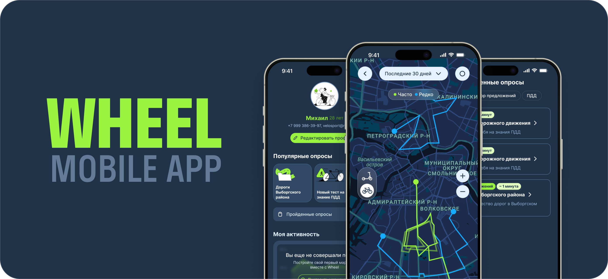
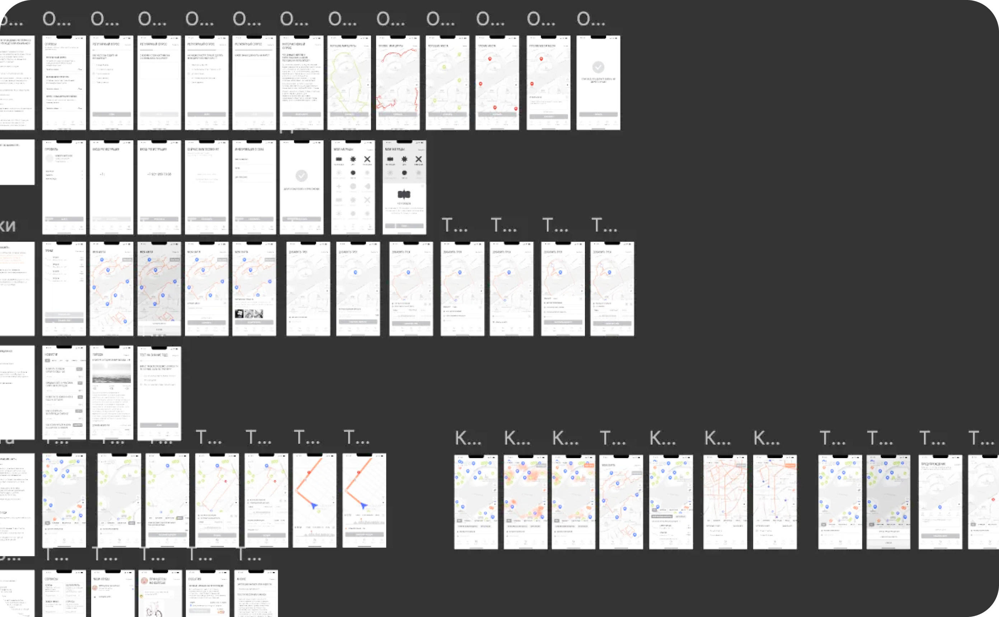
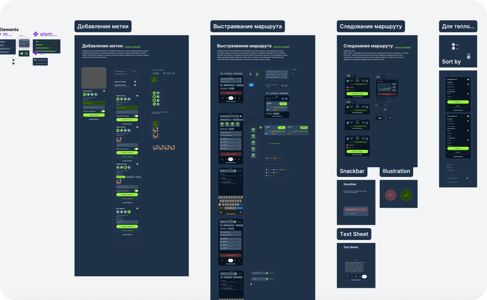
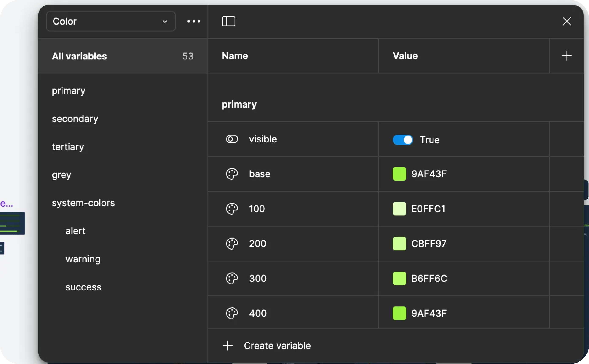
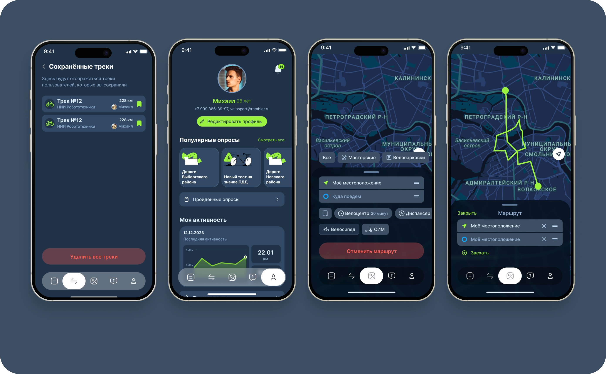
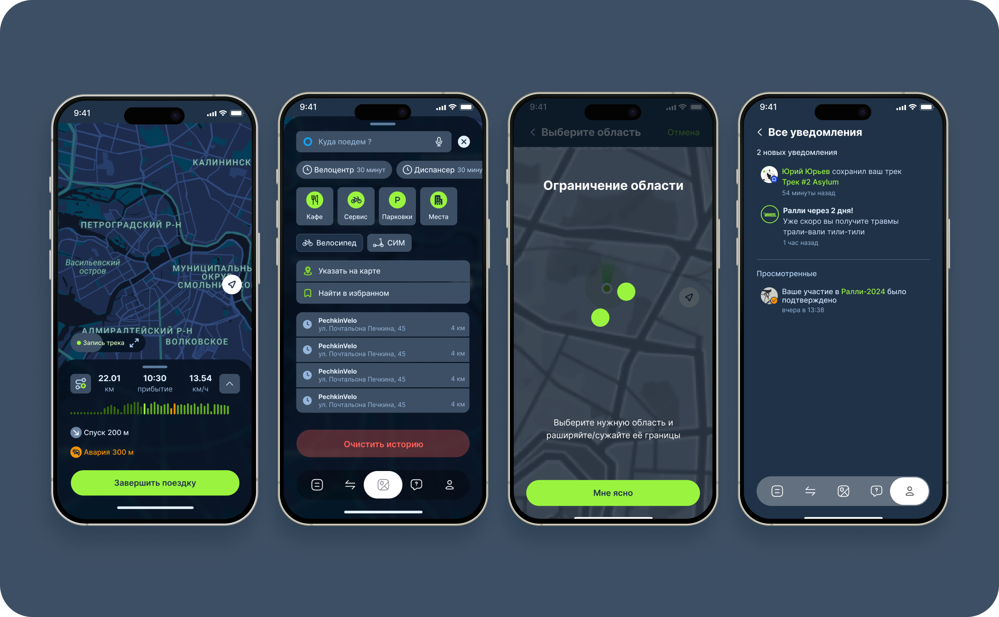

URBAN MOBILITY & GEO
СФЕРА
SOLO PRODUCT DESIGNER
РОЛЬ
2 ТАПА ДО СТАРТА
РЕЗУЛЬТАТ
О ПРОЕКТЕ
Мобильное приложение для безопасной городской велонавигации, анализа дорожного покрытия и картирования велоинфраструктуры.
Контекст и Проблема
Бизнес-задача: Разработать удобный велонавигатор, решающий проблему безопасности маршрутов в мегаполисе и собирающий пользовательские данные о дорожной инфраструктуре.
Пользовательская боль: Стандартные автонавигаторы строят опасные маршруты по скоростным магистралям, не учитывают качество покрытия, высоту бордюров и наличие велодорожек.
Ограничения: Проектирование эргономики под управление одной рукой на ходу, физическая безопасность велосипедиста и кросс-платформенность (iOS / Android).

Приоритизация и Скоупинг
Что намеренно вырезали из MVP: Отказались от соревновательных спидометров, интеграции фитнес-трекеров и сложных 3D-моделей зданий для обеспечения идеальной скорости работы карты.
Core Loop: Выбор точки на карте → Мгновенный выбор типа маршрута (Безопасный / Быстрый) → Запуск HUD-навигации за 2 клика.


Реализация и UX-Логика
Онбординг и активация: Принцип «Zero Friction Start» — доступ к построению маршрута без обязательной регистрации сразу после первого открытия приложения.
Ключевые флоу: Спроектировали эргономичные выдвижные шторки (bottom sheets) и контрастный HUD-режим с крупными шрифтами и голосовыми подсказками.
Системность: Разработали UI-кит с акцентом на безопасность: высококонтрастная палитра для яркого солнца и увеличенные области нажатия (touch target от 48×48px).


От запуска экрана до начала ведения по веломаршруту
Минимальный размер зон нажатия для безошибочного клика на руле
Для быстрой отправки пина о препятствии или ремонте дороги
РЕТРОСПЕКТИВА
Что выстрелило: Концепция «карта как единственный рабочий экран» и мгновенная отправка меток решили главную проблему безопасности и скорости навигации.
Что улучшить в v2.0: Проработать офлайн-кэширование карт для загородных треков и добавить выбор типа велосипеда (шоссейный / гравийный / городской).